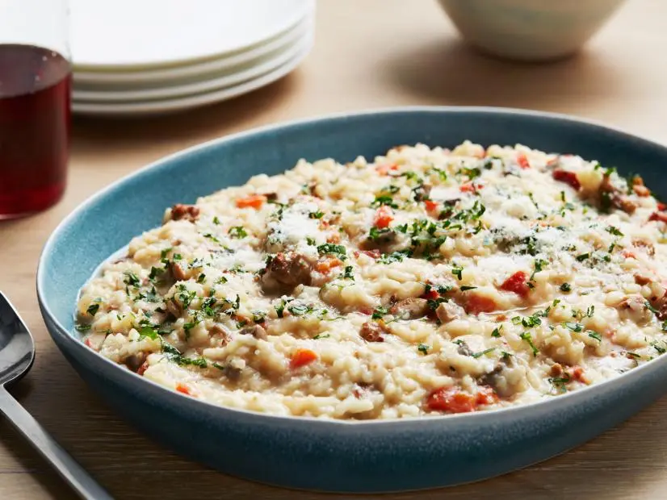

This is a dirty risotto recipe by Giada De Laurentiis found here.

Prep Time:15-20 min |
Cook Time: 1 hour |
Total Time: 1.5 hours
Equipment
Measuring Spoons
Measuring Cups
Large Pot
Spatula
Microwaveable Bowl
Ingredients
5 cups reduced-sodium chicken broth
2 tablespoons butter
2 ounces pancetta, chopped
1 link (about 6 ounces) spicy Italian sausage, casing removed
3/4 cup finely chopped onion
1 cup chopped red bell pepper
4 ounces button mushrooms, coarsely chopped
1/2 teaspoon salt
1/4 teaspoon freshly ground black pepper
1 1/2 cups Arborio rice or medium-grain white rice
3/4 cup dry white wine
1/2 cup freshly grated Parmesan
1 tablespoon chopped fresh Italian parsley leaves
Instructions
In a medium saucepan, bring the broth to a simmer. Cover the broth and keep warm over low heat. You can also microwave the broth so long as it is kept warm throughout the entire cooking process.
In a large heavy saucepan, melt the butter over medium heat. Add the pancetta and sausage and saute until golden brown, about 5 minutes.
Add the onion, bell pepper, and mushrooms and saute until tender, scraping up the browned bits on the bottom of the pan, about 8 minutes. Season with salt and pepper.
Add the rice and stir to coat. Add the wine and simmer until the wine has almost completely evaporated, about 1 minute.
Add 1/2 cup of simmering broth and stir until almost completely absorbed, about 2 minutes.
Continue cooking the rice, adding the broth 1/2 cup at a time, stirring constantly and allowing each addition of broth to absorb before adding the next, until the rice is tender but still firm to the bite and the mixture is creamy, about 25 to 30 minutes total.
Remove from the heat. Stir in 3/4 of the Parmesan. Transfer the risotto to a serving bowl. Sprinkle with the parsley and remaining Parmesan and serve immediately.